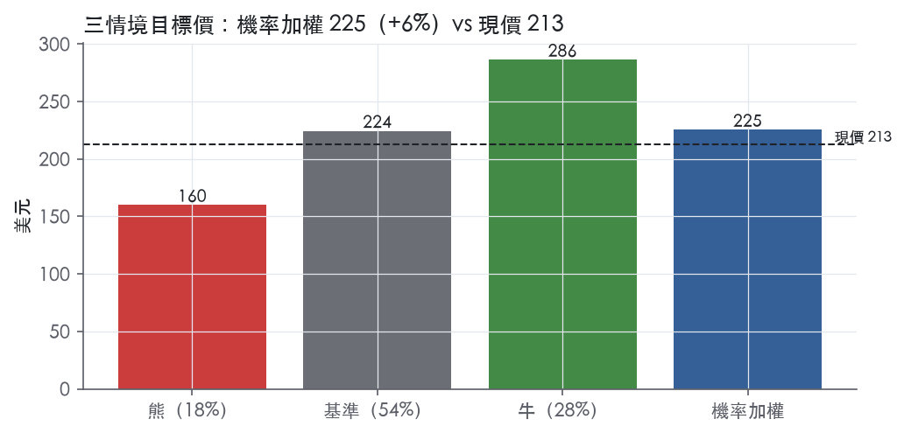
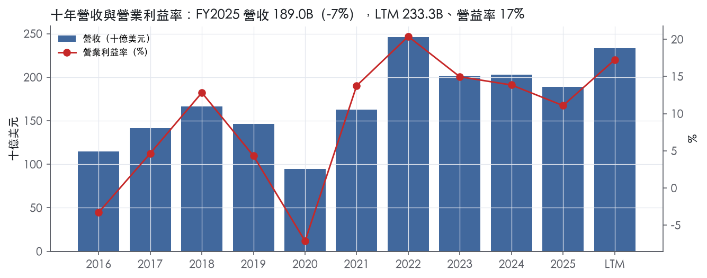
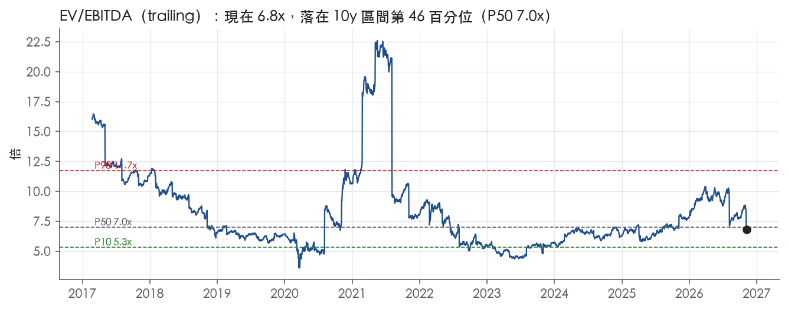
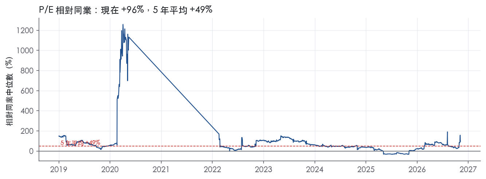
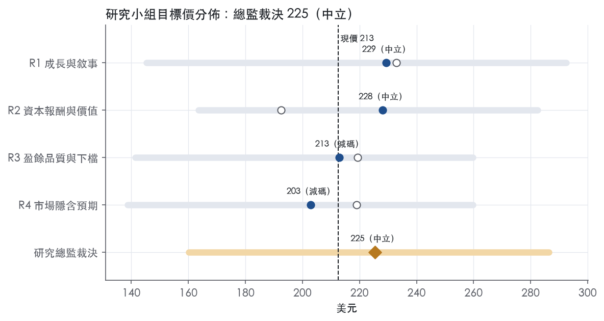
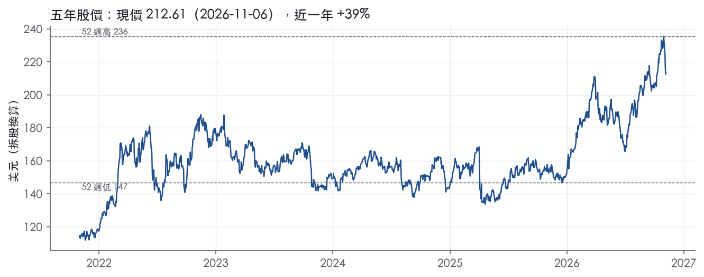

評等總表 › 能源 › CVX
尖峰退潮、88美元中循環撐住，中性｜評等 中立｜目標價 225
| 報告日 | 評等 | 目標價 | 當時股價 | 超額報酬 |
|---|---|---|---|---|
| 2026-11-06 | 中立 | 225 | 213 | -0.5% |
| 2026-10-09 | 賣出 | 187 | 212 | -18.6% |
| 快評 | 動作 | 結論 |
|---|---|---|
| 2026-10-30 | 維持 | 獲利大幅高於預測，維持賣出 |
| 評等 | 中立 |
| 12 個月目標價 | 225 美元 |
| 現價 | 212.61 美元（2026-11-06） |
| 預期報酬 | 股價 +6.0%＋股息 3.3%＝總報酬 +9.3%；同業籃門檻 9.8%，超額 -0.5% |
| 估值方法 | EV/EBITDA 6.6x，套在三年平均的EBITDA |
| 三情境 | 熊 160／基準 224／牛 286 |
| 研究流程 | 四位研究員兩輪辯論＋研究總監裁決 |
| 資料來源 | SEC EDGAR XBRL、Tiingo、FRED（全免費） |
尖峰退潮、88美元中循環撐住，中性（研究總監裁決，四位研究員兩輪辯論後）
評等 中立｜12 個月目標價 225 美元（總監三情境機率加權 230 與研究員中位數 221 各半）｜現價 212.61（2026-11-06）
預期報酬：股價 +6.0%＋股息 3.3%＝總報酬 +9.3%。同業籃門檻 9.8%，超額 -0.5%。
估值方法：EV/EBITDA 6.6x，套在三年平均的EBITDA。三情境：熊 160（18%）／基準 224（54%）／牛 286（28%）。
什麼會讓研究總監改變看法：4Q26 下游盈餘仍 ≥ 4,931M 且 2Q27 在 WTI 約 91 下營益率 ≥ 17%，上修 y2 並轉多；4Q26 宣布削減買回、2Q27 營益率跌破 12%，或 FY2026 10-K 揭露 Hess 內控缺失，轉空。
| 過去四季（實際，FY2026Q3） | 未來四季 | 第 5–8 季 | 第 9–12 季 | |
|---|---|---|---|---|
| 營收（B） | 233.3B | 256.7B | 249.0B | 251.5B |
| 營收成長 | 20.0% | 10.0% | -3.0% | 1.0% |
| 營業利益率 | 17.2% | 17.5% | 15.0% | 14.0% |
| EPS（美元） | 13.77 | 15.69 | 13.23 | 12.69 |
| EPS 成長 | 95.3% | 13.9% | -15.7% | -4.0% |
| 每股股息（美元） | 7.05 | 7.05 | 7.05 | 7.05 |
| P/E（現價） | 15.4x | 13.6x | 16.1x | 16.7x |
| 股息殖利率（現價） | 3.3% | 3.3% | 3.3% | 3.3% |
過去四季為申報數字；預測為研究總監的假設、程式計算。倍數與殖利率都用現價計算，用來看現價對應各期獲利的高低。
| 項目 | 上次（2026-10-13） | 這次（2026-11-07） | 變動 |
|---|---|---|---|
| 評等 | 賣出 | 中立 | 變動 |
| 機率加權目標價（美元） | 187 | 225 | +20.3% |
| 超額報酬 | -18.6% | -0.5% | +18.0 pp |
| 目標倍數 | 7.0x | 6.6x | — |
| 未來四季營收成長 | 4.0% | 10.0% | +6.0 pp |
| 未來四季營益率 | 14.0% | 17.5% | +3.5 pp |
| 未來四季 EPS（美元） | 10.76 | 15.69 | +45.8% |
| 熊／基準／牛機率 | 21／59／20 | 18／54／28 | — |
程式計算；「未來四季」各自從當次報告的資料起點算。研究總監逐點說明見第八章「與上次報告比較」。
| 情境 | 機率（歷史） | 故事 | 未來四季營收成長 | 第 5–8 季營益率 | 倍數 | 目標價 | 股價漲跌 |
|---|---|---|---|---|---|---|---|
| 熊 | 18%（17%） | 本行上行路徑 WTI 72、中東供給恢復使裂解價差回到 FY2025 水準，公司依 10-K FY2025 Item 7 暫停買回；對應風險表第 1 條（油價下行）與第 2 條（下游利差反轉）；D&A 12% 取自 R3（折耗不隨油價降） | 0.0% | 11.5% | 6.2x | 160 | -24.7% |
| 基準 | 54%（56%） | WTI 沿本行 97→88，2027 年下游全年回到約 5.0B，30 億降本與 15 億綜效留在損益表，買回年減股數 2%，倍數 5y P50 | 10.0% | 15.0% | 6.6x | 224 | 5.5% |
| 牛 | 28%（27%） | 本行下行路徑 WTI 95，中東供給中斷延續、委內瑞拉與 Tengiz 增產、降本全數留存，市場把 90 以上當新中循環付 10y P50；y3 沿用基準 +1%，不取 R2 的 −2%（油價持平 95 無回落理由） | 18.0% | 18.0% | 7.0x | 286 | 34.7% |
目標價由程式依研究總監的驅動與倍數計算；機率由研究總監給定。括號內是歷史頻率：把這檔股票過去十年 12 個月報酬的波動形狀，置中在基準情境，結果落在各情境附近的比例。

四位研究員用不同方法各自估值，回應研究總監的質疑後交出第二輪，最後由總監逐點裁決。各研究員的主張見第七章，裁決理由見第八章，完整論證見《研究底稿》。
| 立場（一輪→二輪） | 加權目標價（一輪→二輪） | 評等（一輪→二輪） | 第二輪倍數 | 熊～牛目標價 | |
|---|---|---|---|---|---|
| R1 成長與敘事 | 中性→中性 | 233→229 | 中立→中立 | 7.0x | 145～292 |
| R2 資本報酬與價值 | 看空→中性 | 193→228 | 賣出→中立 | 6.6x | 163～282 |
| R3 盈餘品質與下檔 | 中性→中性 | 219→213 | 中立→減碼 | 6.6x | 141～260 |
| R4 市場隱含預期 | 看空→看空 | 219→203 | 中立→減碼 | 6.3x | 139～260 |
| 研究總監裁決 | 中性 | 225 | 中立 | 6.6x | 160～286 |
目標價由程式依各自的驅動與倍數計算；評等＝機率加權總報酬 − 同業籃門檻。
Chevron 是一家整合型跨國能源公司，業務涵蓋原油與天然氣的探勘、生產，以及運輸燃料、潤滑油、石化產品與添加劑的製造與行銷¹。公司目標是在任何商業環境下安全地提供更高回報、更低碳排與優異的股東價值²。公司直接與間接子公司及關係企業在安哥拉、阿根廷、澳洲、巴西、加拿大、哈薩克、馬來西亞、奈及利亞、沙烏地與科威特共管區、英國、美國與委內瑞拉等國從事實質業務活動²。客戶端為全球能源終端用戶與工業用戶，橫跨上游原油／天然氣買家與下游零售、商用燃料及石化買家。
公司分為上游（Upstream）、下游（Downstream）與「其他」三大報表分部²。上游盈餘主要取決於原油、天然氣與天然氣液（NGL）的國際市場價格，公司對此無控制力²。下游盈餘則緊密連動於汽油、柴油、噴射燃料、潤滑油、燃油、燃料與潤滑添加劑、石化產品與可再生燃料的煉製、製造與行銷利差²。FY2025 上游淨利為 12,822M 美元（美國 5,815M＋國際 7,007M），較 FY2024 的 18,602M 美元下滑²；下游淨利為 3,022M 美元，較 FY2024 的 1,727M 美元成長²。「其他」分部涵蓋全球現金管理與債務融資活動、公司行政功能、保險業務、不動產活動與技術公司，FY2025 淨支出為 3,545M 美元，較 FY2024 的 2,668M 美元擴大²。公司最重要的行銷區域是美國西岸、美國灣岸與亞太地區，並在這些地區自營或持有重大煉油廠股權²。以 LTM 規模看，EBITDA 64.26B 美元，上游仍是盈餘主力，下游在 2026 年煉油利差擴大後貢獻比重明顯提升。
地理上，公司上游生產分散於美國與國際區域，FY2025 全球淨油當量產量為 370 萬桶／日，較 FY2024 成長 12%，主因 Hess 收購及 TCO、二疊紀盆地、墨西哥灣的成長²。約 21% 的淨油當量產量來自 OPEC+ 成員國（赤道幾內亞、哈薩克、馬來西亞、奈及利亞及沙烏地科威特共管區）²。下游通路以自營或參股煉油廠為主，銷售對象涵蓋零售加油站、航空與工業用戶，主要市場為美國西岸、灣岸及亞太²。公司長期 LNG 供貨合約多與原油價格連動，澳洲 LNG 專案多數權益產量已簽署具約束力長約，部分於亞洲現貨市場銷售²。公司在委內瑞拉資產自 2020 年起以非權益投資法記帳，僅於收到現金時認列收入，產量與儲量不計入公司業績²；2026 年起依美國政府最新授權，委內瑞拉合資企業計劃未來五年投資 70 億美元，目標是解鎖低成本、高回報、長週期的產量成長¹。
2026Q1 營收 48.61B 美元，年增 2.1%，淨利 2,210M 美元，EPS 1.11 美元（is/ltm 相關資料包）。2026Q2 公司報告盈餘 12,072M 美元（稀釋每股 6.11 美元），資本運用回報率 21%，美國產量創紀錄，全球產量較去年同期成長 20%，美國煉油廠原油加工量創紀錄達 107 萬桶／日、利用率超過 97%³；當季與 Microsoft 簽署 20 年期電力採購協議，為德州西部資料中心提供 2.67 吉瓦表後電力³；公司並提前達成結構性成本削減目標，年化節省達 30 億美元，Hess 收購協同效益年化達 15 億美元³。2026Q3 公司報告盈餘 9,924M 美元（稀釋每股 5.06 美元），資本運用回報率 18%，美國上游產量連續第五季超過每日 200 萬桶油當量，美國煉油廠原油加工量再創紀錄，利用率達 98%¹；季內總負債再減少 35 億美元，淨負債季減 78 億美元¹；董事會宣布季配息每股 1.78 美元，將於 2026 年 12 月 10 日發放¹。截至 LTM@FY2026Q3，營收 233.33B 美元、GAAP 稀釋 EPS 13.77、FCF 34.07B 美元（ltm.revenue/eps/fcf.LTM@FY2026Q3），顯示 2026 年布蘭特油價回升帶動盈餘大幅優於 2025 年同期水準。
公司表示將持續發展油氣資源以滿足客戶與消費者的能源需求，同時相信能源的未來是低碳；公司將維持投資組合彈性，以回應政策、技術與客戶偏好的變化²。公司目標是成長油氣業務、降低營運碳強度，並成長新能源業務，為此將槓桿運用公司的能力、資產、合作夥伴關係與客戶關係²。公司計劃在 2026 年底前達成 30 至 40 億美元的結構性成本削減，主要來自組合優化、以技術提升生產力，以及改變工作執行方式與地點（包括擴大使用全球能力中心），2025 年已實現 15 億美元結構性成本節省，年化達 20 億美元²。管理層指出 2026 年淨油當量產量預估將較 2025 年成長 7%至 10%（假設布蘭特油價 60 美元／桶、不含預期資產出售），並包含 Hess 資產全年貢獻²。公司亦強調委內瑞拉擴大面積、巴肯中游成本降低約 50%、以及與 Microsoft 的資料中心供電合約，是支撐未來現金流的具體項目¹,³。整體看，Chevron 的成長敘事建立在 Hess 併購整合效益、二疊紀與墨西哥灣有機產量成長、以及下游煉油利差週期性回升三條腿上。目前 trailing EV/EBITDA 6.8x 處於過去五年中位數附近，股息率 3.3%，顯示市場對其成長故事已有相當程度的定價。委內瑞拉與中東地緣政治風險仍是最大的執行變數，值得在後續風險章節深入處理。

Chevron 沒有經濟護城河，我們沒有把握未來 5 年 ROIC 能穩定高於資本成本。公司自己說盈餘主要取決於上游，而上游最重要的變數是原油價格，且油價由公司無法控制的全球市場決定²。價格接受者的身分，加上十年 ROIC 平均低於資本成本，評級只能給「無」。趨勢判為穩定：結構性降本與 Hess 併購可以改善單位成本，但改變不了公司在定價上的被動地位。
Chevron 唯一有具體證據的優勢來源是成本優勢，主要來自資產品質與既有基礎設施的規模，但這個優勢不足以構成護城河。
這些證據說明 Chevron 在成本曲線上位置不錯，代表低油價時存活能力較強，但同業也能取得同等級的資源，也能做同樣的降本，所以這不等於能長期賺取超額報酬。無形資產、轉換成本、網路效應、效率規模四類，原文都找不到具體證據，不列。
看不到，數字直接否定護城河主張。ROIC 十年平均 8.0%，低於資本成本代理值 9.8%，差距為 -1.8%。ROIC 有資料的 9 年中，只有 3 年高於資本成本。ROIC 標準差 6.5%、區間從 -2.9% 到 21.3%，代表報酬由油價週期決定，而不是由競爭優勢決定。營業利益率十年平均 8.5%、標準差 8.2%，最低 -7.1%、最高 20.4%，波動幅度與平均值相當。公司自己揭露的資本運用報酬率，從 2023 年的 11.9% 降到 2024 年的 10.1%，再降到 2025 年的 6.6%²。同期 Brent 均價從 2024 年的 81 美元降到 2025 年的 69 美元²。報酬跟著油價一起下滑，是價格接受者的典型特徵。
數字裡有一個看似支持護城河的項目：毛利率十年平均 43.7%、標準差只有 2.4%。我們不採信這個訊號，因為最大的成本項是外購原油與產品，原油同時是下游產品的最大成本，成本與售價同步漲跌，毛利率穩定只是轉嫁結構的結果，並不代表定價能力。2025 年外購原油與產品成本為 108,214M 美元，同期營業收入為 184,432M 美元²。
即使是目前的成本優勢，也面臨四股侵蝕力量。
第一是儲量補充靠併購：2025 年儲量替代率為 158%，但 5 年與 10 年替代率只有 91% 與 95%²。有機補充不足 100%，代表要靠併購維持規模。Hess 占合併總資產的 24%，卻只占營收的 3%²。併購墊高投入資本，會壓低未來的 ROIC。
第二是能源轉型政策：公司承認這類合規政策已經、並可能持續造成負面影響，包括碳氫產品被替代與資產減損²。
第三是地緣與供給配額：約 21% 的淨油當量產量位於 OPEC+ 成員國²。CPC 曾遭無人機攻擊，相關事件可能衝擊 Tengiz²。
第四是遺留負債回流：2025 年公司為已出售資產的除役義務支出 297M 美元，預計到 2033 年每年再支出 200–300M 美元²。
目標倍數相對整合型同業應該持平，不給溢價，因為 ROIC 十年平均低於資本成本，沒有任何護城河能支撐超額報酬期的延長。倍數錨定在 5 年中位數，也就是 EV/EBITDA 6.6x，並以循環中段盈餘為基準，不要把 LTM 的高油價盈餘資本化。成本曲線位置較佳只能支撐下行保護與股息延續性，可以放在折現率或情境權重處理，不應反映在倍數溢價上。
| 指標 | 最新 | 十年平均 | 標準差 | 最低 | 最高 |
|---|---|---|---|---|---|
| ROIC | 6.9% | 8.0% | 6.5% | -2.9% | 21.3% |
| 毛利率 | 42.8% | 43.7% | 2.4% | 40.7% | 48.2% |
| 營業利益率 | 11.1% | 8.5% | 8.2% | -7.1% | 20.4% |
| FCF 利潤率 | 8.8% | 7.5% | 5.4% | -4.7% | 15.3% |
| ROE | 7.3% | 9.0% | 7.3% | -4.0% | 23.8% |
程式計算。資本成本代理值（10 年債＋5%）：9.8%；ROIC 平均減資本成本：-1.8%；ROIC 有資料的 9 年中，高於資本成本 3 年。
CVX 的 LTM CFO／淨利 1.93x、FCF／淨利 1.26x，現金持續跟上甚至超過盈餘；但十年平均 CFO／淨利為 -0.43x，顯示這個比率在油價崩跌年份（FY2020）會劇烈失真，不能用長期平均代表常態。同時 3Q26 的調整後自由現金流明確提到受益於 TCO 10 億美元貸款償還與資產出售收益，這部分現金品質需要打折（詳下）¹。
有，而且是全面性的，不是單季撐出來的數字。LTM CFO／淨利 1.93x、近三年平均 2.07x，均遠高於 1.00x 的綠燈門檻。FCF／淨利 LTM 1.26x、近三年 1.04x，也維持在綠燈區。應計比率 LTM -7.5%、近三年 -6.1%，負值代表 CFO 持續超過淨利，盈餘不是靠應計堆出來的。3Q26 單季 CFFO 16.0B 美元，高於去年同期的 9.4B 美元，公司自己解釋是「higher earnings and increased cash distributions from Tengizchevroil LLP (TCO)」¹；但同一段也點名「Adjusted free cash flow benefited from a $1 billion loan repayment from TCO and proceeds from asset sales」¹，這 1B 美元貸款償還是一次性現金回收，不是經常性營運現金，拉高本季 FCF 但不該外推到未來季度。
3Q26 GAAP earnings 9,924M 美元（每股 5.06 美元），調整後 earnings 為 10,361M 美元（每股 5.28 美元），調整項目包括 legal reserve 160M 美元、impairment 110M 美元、pension settlement costs 24M 美元，外加匯率效應減少盈餘 143M 美元¹。另外公司單獨揭露 Timing Effects 為 -1,580M 美元（本季）及 YTD -2,980M 美元，屬於存貨計價與定價時間差，不是現金項目，但會讓季度盈餘波動放大¹。CFFO Excluding Working Capital 本季 16.6B 美元，略高於申報 CFFO 的 16.0B 美元，代表營運資金本季小幅拖累現金流，不是美化項目¹。法律準備金、減值、退休金結算三項金額都不大（合計約 294M 美元），相對 9.9B 美元的淨利是雜訊，不影響品質判斷，公認為真實但非核心成本。
槓桿低、回購與配息力度大，體質穩健。淨負債／EBITDA LTM 0.29x、近三年 0.54x，遠低於 1.50x 綠燈門檻；8-K 另外揭露 Net debt-to-CFFO 本季 0.4x、去年同期 1.1x，顯示槓桿持續下降¹。利息保障倍數 LTM 29.5x，付息能力完全沒有壓力。本季「Total debt was reduced by an additional $3.5 billion and net debt was down $7.8 billion in the quarter」，去槓桿動作明確且是真實還債，不是會計操作¹。股利加回購佔淨利 LTM 92.6%、近三年 159.3%，近三年超過 100% 代表部分年份是用舉債或現金儲備回饋股東而非當期盈餘，但考量目前淨負債／EBITDA 僅 0.29x，這個回饋強度目前看不出壓力。稀釋股數年變動 LTM -0.6%、近三年 -1.4%，回購持續淨減少股數，非灌水 EPS 的來源。
程式只標出一條紅旗：淨利率 FY2020→FY2021 跳動 +15 個百分點。這是油價週期的真實反彈，不是會計假警報，但也不是可外推的常態成長——FY2020 淨利 -5.54B 美元（Brent 崩跌年），FY2021 回升至 15.62B 美元，屬於能源業典型的大宗商品週期效應，10-K Item 7 原文未取得無法逐項核對管理層解釋，但從年度表的營收與營益率同步跳升看，判斷為景氣驅動的一次性基數效應，而非盈餘品質惡化或美化。
存貨成長減營收成長 FY2025 為 +13.8pp，為黃燈但未達紅燈門檻（15pp）。這代表營運資金有吃掉部分現金，方向上與應收帳款成長減營收成長 FY2025 -6.0pp（綠燈）相反，两者互相部分抵銷，整體營運資金風險可控，且公司自己在本季揭露的 CFFO Excluding Working Capital（16.6B 美元）高於實際 CFFO（16.0B 美元）也印證營運資金是小幅拖累而非主要推手¹。
其餘項目（CFO／淨利、FCF／淨利、應計比率、槓桿、利息保障、股數稀釋、股東回饋）全部綠燈，無需額外解釋。
SBC／營收欄位無資料（—），本系統不做加回處理，暫無法評論股權薪酬對盈餘品質的影響，建議估值研究員留意未充分揭露的風險。
盈餘品質整體健康，估值可用 GAAP 數字為主，不需要系統性打折，但要把本季 FCF 中來自 TCO 1B 美元貸款償還與資產出售的一次性現金剔除後再估算 run-rate FCF。槓桿極低（淨負債／EBITDA 0.29x）不構成任何倍數限制，反而支持估值用更寬鬆的乘數區間。油價週期造成的淨利率大幅波動（如 FY2020→FY2021）意味著單季或單年 P/E 不宜直接外推，應以 LTM 或跨週期平均 EBITDA／FCF 為估值基礎。
| 項目 | LTM | 近三年 | 十年 | 燈號 | 規則 |
|---|---|---|---|---|---|
| 營業現金流／淨利 | 1.93x | 2.07x | -0.43x | 綠 | ≥1.00x 綠、<0.80x 紅 |
| 自由現金流／淨利 | 1.26x | 1.04x | 2.25x | 綠 | ≥0.90x 綠、<0.60x 紅 |
| 應計比率（(淨利−CFO)／平均總資產） | -7.5% | -6.1% | -6.3% | 綠 | ≤0.0% 綠、>5.0% 紅 |
| SBC／營收 | — | — | — | — | ≤3.0% 綠、>8.0% 紅 |
| 淨負債／EBITDA | 0.29x | 0.54x | 1.16x | 綠 | ≤1.50x 綠、>3.00x 紅 |
| 利息保障倍數（營業利益／利息） | 29.5x | 42.9x | 28.7x | 綠 | ≥8.00x 綠、<3.00x 紅 |
| 稀釋股數年變動 | -0.6% | -1.4% | -0.1% | 綠 | ≤0.0% 綠、>3.0% 紅 |
| （股利＋回購）／淨利 | 92.6% | 159.3% | -60.6% | 綠 | ≥50.0% 綠、<0.0% 紅 |
| 應收帳款成長 − 營收成長（FY2025） | -6.0pp | — | — | 綠 | ≤5pp 綠、>15pp 紅 |
| 存貨成長 − 營收成長（FY2025） | +13.8pp | — | — | 黃 | ≤5pp 綠、>15pp 紅 |
程式計算；燈號以 LTM（無則近三年平均）判定。
| 風險 | 觸發指標（看什麼數字、在哪裡看） | 對 EPS 的影響方向與粗略幅度 | 未來 12 個月發生機率 | 出處 |
|---|---|---|---|---|
| 油價／天然氣價格下行壓縮上游盈餘 | 布蘭特現貨均價（新聞稿「Avg. Brent Spot Price」欄）、美國／國際液體與天然氣 realization（$/BBL、$/MCF） | 負向，大；FY2025 布蘭特均價 69 美元／桶 vs FY2024 的 81 美元／桶，上游淨利由 18,602M 美元降至 12,822M 美元 | 高 | 10-K 年報 FY2025 Item 1（業務） |
| 下游煉油利差週期性反轉 | 美國/國際下游分部淨利（10-Q/8-K Segment Highlights）、煉油廠原油加工量與利用率 | 負向，大；2025Q3→2026Q3 下游淨利從 1,137M 美元升至 4,931M 美元¹，反轉時同等級下拉 | 中 | 8-K 財報新聞稿（2026-10-30） |
| 委內瑞拉、以色列／中東地緣政治與制裁政策變化 | 美國政府對委內瑞拉授權的變動公告、以色列/中東衝突進展、委國權益法入帳時點 | 負向，中至大；委國投資計畫規模 7B 美元（五年）¹，國際上游 3Q2026 產量因中東衝突下滑 109,000 桶／日¹ | 中 | 8-K 財報新聞稿（2026-10-30） |
| Hess 整合與資產減損/法律負債追溯 | 內控排除 Hess 資產占比（10-K Item 9A：資產 24%、營收 3%）、Note 24/16 揭露的環境或法律準備金 | 負向，中；單季已列計法律準備金 160M 美元、減損 110M 美元¹ | 中 | 10-K 年報 FY2025 Item 9A |
| 環保/氣候法規合規罰款與政策不確定性（含關稅） | NOV/罰款公告（New Mexico、加州 Bay Area Air District、ECMC）、關稅政策裁定與公司第三方支出占比 | 負向，小；法律案件多為「逾 1.0 百萬美元」罰款量級；2025 年關稅影響低於公司第三方支出的 1%⁴ | 低 | 10-K 年報 FY2025 Item 3 |
油價下行是結構性最大風險。 公司自己承認「影響上游經營結果最重要的因素是原油價格，該價格由公司無法控制的全球市場決定」²。FY2025 的實例已經驗證這條風險的殺傷力：布蘭特均價從 81 美元降到 69 美元／桶，美國液體 realization 從 56.24 美元降到 48.13 美元，國際液體 realization 從 71.38 美元降到 61.58 美元²，直接導致上游淨利減少約 5.78B 美元（18,602M 減至 12,822M）²。更需要注意的是，2026Q2／Q3 的強勁 EPS（6.11、5.06 美元）是建立在布蘭特均價回升至 97-104 美元／桶的基礎上¹，這個基數一旦回落至 2025 年的 69 美元水準，EPS 會同向劇烈收縮，這是監測的核心指標。
下游利差同樣是週期性而非結構性優勢。 下游淨利從 2025Q3 的 1,137M 美元跳升到 2026Q3 的 4,931M 美元¹，公司解釋為「可靠營運帶來更高的精煉產品銷售利差」¹。煉油利差歷史上波動劇烈，受全球供需平衡、原油與其他原料價格、天然氣價格、庫存水準、地緣政治事件及計畫外停工影響²，這些都不在公司控制範圍內。目前美國煉油廠原油加工量已創 20 年新高、利用率達 98%¹，操作槳桿已幾乎打滿，未來利差回歸常態將直接拖累下游淨利貢獻。
地緣政治是最難量化但已有具體財務事證的風險。 公司在委內瑞拉的資產自 2020 年起以非權益法入帳，僅於收到現金時認列收入²，2026Q3 首度因權益會計變更納入一個月委國產量¹，顯示美國對委內瑞拉制裁政策的任何調整都會直接改變入帳方式與現金流時點。公司並宣布未來五年在委國投資 7B 美元，目標是解鎖低成本、高回報、長週期的產量成長¹，這筆資本是建立在當前授權持續有效的假設上，一旦美國政策反轉，投資可能擱置或減損。以色列/中東衝突已實際導致 2026Q3 國際上游產量較去年同期減少 109,000 桶／日¹，公司持有 Leviathan 39.7% 權益與 Tamar 25% 權益²，衝突升級的連動性明確。哈薩克 CPC 管線也曾遭無人機攻擊影響 Tengiz 油田出口²，屬同一類風險的延伸。
Hess 併購後的整合與追溯性負債是財報品質風險。 公司在 10-K Item 9A 中明確排除 Hess 於內控有效性評估之外，Hess 總資產與總營收分別占合併財報的 24% 與 3%⁵，這代表相當於公司四分之一資產規模的實體尚未經過完整內控驗證，存在未發現的會計或營運問題風險。此外單季財報已列計法律準備金 160M 美元、減損 110M 美元、退休金清算成本 24M 美元¹，顯示整合過程中持續有非經常性費用侵蝕盈餘品質。公司過去亦揭露已出售資產的解除義務（decommissioning obligations）有可能追溯回公司承擔，2025 年已為此類義務支出 297M 美元，並預期 2033 年前每年再支出 200-300M 美元⁴，屬於會計上容易被低估的尾部負債。
環保罰款與關稅政策屬於機率低、金額相對小的風險，但案件數量值得留意累積效應。 10-K Item 3 列出至少五件環境法規違規通知（新墨西哥州空氣品質、加州 El Segundo 生質燃料積分、Bay Area Air District 低氮氧化物設備、Hess 的 Clean Water Act 疑似違規、科羅拉多 ECMC），雖然單筆金額門檻僅「1.0 百萬美元或以上」⁶，但案件數量持續增加顯示公司營運合規壓力在上升。關稅方面，公司表示 2025 年關稅影響低於公司第三方支出的 1%，對財務結果不具重大性⁴，但美國最高法院已於 2026 年 2 月撤銷部分全球關稅，未來關稅規模與期間仍有重大不確定性⁴，需持續觀察政策演變。
資本回報政策的紀律可能在油價回落時鬆動。公司目前仍維持高額庫藏股計畫（2025 年回購 12.1B 美元，2023 Program 下尚餘 36.5B 美元額度）⁴，且連續第 38 年增加年度股息²，這套股東回饋敘事已高度嵌入市場對 CVX 的估值預期（股息率 3.3%）。公司自己也承認「在持續低油價與窄煉油利差期間，公司有能力調整資本支出計畫並暫停或削減庫藏股計畫」⁴——換言之庫藏股本身就是可被犧牲的緩衝，一旦油價回落到 60 美元／桶以下情境，市場可能提前反應回購節奏放緩，對股價倍數的衝擊會比單純 EPS 下滑更快出現。
淨負債在 Hess 收購後暴增，若油價走弱、現金流收縮，去槓桿節奏可能落後市場預期。總負債從 FY2024 年底的 24,541M 美元躍升至 FY2025 年底的 40,758M 美元（含收購時承接的 10.0B 美元債務及租賃負債）⁴，雖然 2026Q3 已單季減少 3.5B 美元、淨負債減少 7.8B 美元¹，顯示去槓桿正在進行中，但這是建立在 2026 年異常高油價（布蘭特 94-97 美元／桶均價）帶來的強勁 CFFO 基礎上。若油價回落至 2025 年水準，淨負債／CFFO 比率（目前 0.4x）可能快速回升，進而限制公司在維持股息與回購兩項承諾之間的彈性。
現價 212.61 對應 trailing（過去四季）P/E 15.4x、EV/EBITDA 6.8x、EV/EBITA 10.9x、EV/Sales 1.9x、FCF 殖利率 8.2%。主要估值倍數 EV/EBITDA 現在 6.8x，落在10 年區間第 46 百分位（P10／P50／P90 = 5.3x／7.0x／11.7x）。

把程式的機械基準預測放到現價下，市場付的前瞻倍數是：EV/EBITDA（未來四季） 6.3x、P/E（未來四季） 14.9x、EV/EBITDA（第 5–8 季） 6.1x、P/E（第 5–8 季） 15.3x。反推 DCF 顯示市價隱含未來五年營收年成長 2.8%（WACC 9.0%、終值成長 3.0%、FCF 利潤率 11.0%，SBC 不加回）。
| 倍數 | 現在 | 10 年 P10 | 10 年 P50 | 10 年 P90 | 現在分位 | 全期 P50 |
|---|---|---|---|---|---|---|
| P/E | 15.4x | 10.4x | 17.3x | 43.1x | 33.4% | 17.3x |
| EV/EBITDA | 6.8x | 5.3x | 7.0x | 11.7x | 46.0% | 7.0x |
| EV/EBITA | 10.8x | 7.5x | 12.5x | 40.8x | 30.6% | 12.5x |
| EV/EBIT | 10.8x | 7.5x | 12.5x | 40.8x | 30.6% | 12.5x |
| EV/Sales | 1.9x | 1.3x | 1.6x | 2.1x | 69.9% | 1.6x |
| P/S | 1.8x | 1.2x | 1.5x | 1.9x | 82.8% | 1.5x |
| P/FCF | 12.2x | 10.3x | 15.6x | 56.9x | 18.1% | 15.6x |
trailing 倍數（股價 ÷ 過去四季）；分位以每個交易日計算。
同業籃：MPC, PSX, COP, PBF, SUN, SUNC（SIC 2911 同業 18 家中，CY2025 營收最接近的 6 家）。評等門檻 9.8%：同業「倍數不變下持有一年」的隱含報酬中位數（＝ FCF 殖利率 ×(1＋g)＋g，g 為 5 年營收年複合成長並夾在 −2%～8%），每家夾在 0～15%、P/E 低於 5 倍視為資料可疑而排除，中位數再限制在 10 年債到 10 年債＋5% 之間（同業原始中位數 15.0%）；排除：PBF（P/E 3.0x 資料可疑）、SUN（隱含報酬算不出來）。
| 代號 | 市值 | 5 年營收 CAGR | 營益率 | ROIC | P/E | 5 年 P/E 中位數 | EV/EBITDA | P/FCF | 隱含報酬 |
|---|---|---|---|---|---|---|---|---|---|
| CVX | 417.9B | 14.8% | 17.2% | 6.9% | 15.4x | 15.4x | 6.8x | 12.3x | 16.8% |
| MPC | 104.4B | 13.7% | 12.5% | 15.7% | 7.3x | 8.5x | 4.9x | 5.0x | 29.6% |
| PSX | 95.8B | 15.6% | 8.7% | 8.6% | 7.9x | 13.9x | 6.3x | — | 21.7% |
| COP | 161.1B | 25.7% | 26.1% | 10.1% | 14.3x | 12.4x | 5.9x | — | 15.5% |
| PBF | 8.3B | 14.2% | 9.8% | -0.6% | 3.0x | — | 1.9x | 3.1x | 42.3% |
| SUN | — | 18.7% | 4.6% | — | — | — | — | — | — |
| SUNC | 3.1B | 4.5% | 4.6% | — | 14.0x | — | — | — | 12.0% |
| 同業中位數 | 14.9% | 9.3% | 9.3% | 7.9x | 12.4x | 5.4x | 4.1x | 9.8% |
全部 trailing，程式以各公司 SEC XBRL 與 Tiingo 行情計算；第一列為本檔。
P/E 相對同業中位數：現在 96.4%，過去 1 年平均 49.5%、3 年 32.8%、5 年 49.3%；EV/EBITDA 相對同業中位數：現在 24.9%，過去 1 年平均 5.5%、3 年 2.0%、5 年 6.7%。

程式的機械基準（成長率從過去四季年增率三年收斂到 6%、利潤率持平）用 EV/EBITDA 10 年 P50（trailing） 估值得到 242（13.8%），用現行倍數得到 235。這兩個數字只是參考點，不是本報告的目標價；研究員對這個定價的回應在第七章。
下表是每位研究員第一輪（各自獨立）與第二輪（回應研究總監的質疑後）的結果。目標價全由程式依各自的假設計算。
| 立場（一輪→二輪） | 加權目標價（一輪→二輪） | 評等（一輪→二輪） | 第二輪倍數 | 熊～牛目標價 | |
|---|---|---|---|---|---|
| R1 成長與敘事 | 中性→中性 | 233→229 | 中立→中立 | 7.0x | 145～292 |
| R2 資本報酬與價值 | 看空→中性 | 193→228 | 賣出→中立 | 6.6x | 163～282 |
| R3 盈餘品質與下檔 | 中性→中性 | 219→213 | 中立→減碼 | 6.6x | 141～260 |
| R4 市場隱含預期 | 看空→看空 | 219→203 | 中立→減碼 | 6.3x | 139～260 |
| 研究總監裁決 | 中性 | 225 | 中立 | 6.6x | 160～286 |
目標價由程式依各自的驅動與倍數計算；評等＝機率加權總報酬 − 同業籃門檻。
分歧度：第一輪 加權目標價 193～233（區間＝現價的 19%）· 倍數 6.6～7x · 立場 中性×2、看空×2；第二輪 加權目標價 203～229（區間＝現價的 12%）· 倍數 6.3～7x · 立場 中性×3、看空×1。

| 研究員 | 第二輪主張 | 堅持的理由 |
|---|---|---|
| R1 成長與敘事 | 中性；倍數7.0x，取十年中位數，代表全週期。 | 熊機率留在18%，因為買回暫停與Hess內控是公司特有風險。 |
| R2 資本報酬與價值 | 中性；倍數6.6x，取五年中位數，第一年營收成長13%。 | 十年中位數含2016、2020谷底年，套在高油價盈餘上會重複計算油價。 |
| R3 盈餘品質與下檔 | 中性；倍數6.6x，取五年中位數，不給同業溢價。 | 熊情境最深：第二年營收跌15%，倍數6.0x，折耗不隨油價降。 |
| R4 市場隱含預期 | 偏空；倍數6.3x，等於市場現在付的前瞻倍數。 | 市場讓營收在高價基期上再成長10.7%，他認為營收會下滑。 |
每位研究員的逐條回應與完整論證見《研究底稿》（CVX_研究底稿_2026-11-07.docx）。
| 分歧點 | R1 | R2 | R3 | R4 | 什麼資料會分出勝負 |
|---|---|---|---|---|---|
| 目標倍數 | 7.0x，劇本 10y P50，與現行 6.8x 持平 | 6.6x，5y P50；分母在 WTI 88–97，10y 帶含谷底撐高的倍數 | 6.6x，5y P50；同業溢價 24.9% 高於 5 年均 6.7%，不給溢價 | 6.3x；市場對基準預測付的 NTM 6.3x 當下限 | 4Q26、1Q27 盈餘回落後 trailing 倍數落點；同業溢價是否收斂 |
| NTM 營收成長 | 10% | 13%，四季 WTI 97/94/91/88 | 10% | 10% | 2027-02 的 4Q26 營收對基期 46.87B |
| Q5–Q8 營收成長 | −2%，量增 | −5%，前提到 88 仍下坡 | −3%，出售出表、灣區爬坡、PSC 回補 | −5%，高價基期後下滑 | 2027 產量指引；2027 下半年 WTI |
| Q5–Q8 營益率 | 14.0% | 15.5%，FY2024 13.9% 為下限、下游回 3,022M | 14.5% | 14.0%，下游全年 5.0B | 4Q26 下游盈餘；2Q27 營益率 |
| 熊情境與機率 | 18%、6.2x、y2 −8%、營益率 11.5% | 22%、6.2x、y2 −8%、12.5% | 20%、6.0x、y2 −15%、10%、D&A 12% | 20%、6.1x、y2 −10%、10.5% | 2027Q2 WTI 是否跌破 75；12 月預算的買回步調 |
倍數：裁給 R2，6.6x。 10y P50 7.0x 是配「正常化」分母的尺，但本行基準 WTI 97→88 高於 FY2024 Brent 81、FY2025 的 69（10-K FY2025 Item 1），三年平均 EBITDA 不在全週期中段。10 年帶含 FY2016 15.70B、FY2020 12.75B（／FY2020）兩個谷底年，倍數被塌陷的分母撐高（10y P90 11.7x 對 5y P90 9.1x，band.ev_ebitda），套在高油價區的平均 EBITDA 上等於把油價算兩次；5 年窗與前提同油價區，口徑對得上。R3 補的同業溢價 24.9% 對 5 年均 6.7%（同業比較表）堵住加溢價的空間。R1 的缺口：「7.0 與現行 6.8 持平」是拿套在 LTM 尖峰 64.26B的 trailing 比三年平均，正是他在 G2 自己撤回的跨口徑比較。R4 的缺口：市場 6.3x 是對基準 15.4%／10.7% 路徑付的，他自己否定這條路徑；同一 EV 除以較低分母，市場付的倍數更高，6.3x 因此是壓縮假設，個股理由只剩同業溢價收斂，但同業籃是 MPC 4.9x、PSX 6.3x 這類套在煉油尖峰上的 trailing 倍數，CVX 自身在 5y 第 57.8 分位（倍數帶）不算拉伸。本輪無人再用利率壓倍數。
NTM 營收：裁給 R4，10%。 R2 的 13% 把 3Q26（Brent 97）的 67.80B平移四季，但 WTI 沿路徑降到 88、煉廠利用率已 98%、產量 3,980 MBOED 低於去年 4,086（8-K 2026-10-30）。R4 的營收絕對誤差 2.0% 是四人最低；本部營收略偏低（−0.5%），不往 10% 以下裁。
Q5–Q8 營收：裁給 R3，−3%。 前提只給到 2027Q3 的 88，之後沒有再往下的路徑，R2、R4 的 −5% 是自加下坡；R4 引的 FY2023 −18.4%發生在 Brent 大跌年。R3 是唯一寫出量價組成的人：新加坡煉廠與東南亞下游出售出表（8-K 2026-07-31）、墨西哥灣 Ballymore／Whale／Anchor 爬坡與 PSC 權益低價回補（8-K 2026-10-30）；R1 的 −2% 沒扣出售。y3 取 R1／R3 的 +1%。
營益率：own，17.5%／15.0%／14.0%。 接受 R2 的下限：FY2024 13.9%是 Brent 81、未併 Hess、未降本的數字，30 億降本與 15 億綜效已年化（8-K 2026-07-31），y2 不該低於它。也接受 R4 的下游 2027 全年約 5.0B（假設）：WTI 88 高於 2025 年 Brent 71（8-K 2026-10-30），擾動緩退，不會回到 3,022M。但 R2 的 15.5% 配下游 3,022M，R4 的 14.0% 配 5.0B，兩邊配對都不一致；R2 沒扣 Hess 資產（占總資產 24%，10-K Item 9A）墊高的 DD&A 與其他分部擴大到 3,545M 的淨費用（10-K FY2025 Item 1）。本部紀錄 R1／R2／R3 營業利益偏低（−2.3／−4.3／−2.9%）、R4 偏高（+1.3%），把 R3 的 14.5% 向上、R4 的 14.0% 向下修，落在 15.0%。y1 取 R2／R4 的 17.5%：LTM 含 FY2025Q4 10.6%、FY2026Q1 8.8% 兩個低油價季（dv.op_margin），滾出後對照 3Q26 在 Brent 97 的 20.5%，16.5% 太低。y3 取 R2 的 14.0%：降本屬結構性（財報快評：成立），不回十年中位 11.9%，只反映下游再退。
熊情境：裁給 R1，兩處微調。 R1 的 11.5% 對得上 FY2025 Brent 69 的 11.1%加降本；R3 的 10% 低於 FY2025 卻假設降本全在，營收 −15% 又把 2027 年當 FY2025 重演，過深；R2 的熊 y1 +5% 在 WTI 72 下偏高。微調：採 R3 的 D&A 12%（折耗不隨油價降，模型下 EBITDA 受傷小於 EBIT）；對應風險表改第 1、2 條，機制是油價與利差，R1 原對的 Hess 與委內瑞拉是疊加風險。
漂移與總經偏離： 無退回。R2 加權 193→228、向中位數靠攏 67%，但每項都是回應 V1／V2／V4 並附 fact id，倍數 6.6x 反而沒動；R3、R4 遠離中位數。四人 macro_deviations 皆空，油價全照本行前提，無需裁決。
與基準不同：rev_growth 10%／−3%／+1%（基準 15.4／10.7／6.0）；op_margin 17.5%／15.0%／14.0%（15.5／13.7／11.9）；share_change_pct −2.0%（基準 +0.9% 是 Hess 發股的痕跡；FY2025 在 Brent 69 仍回購 12.1B、剩餘額度 36.5B，10-K FY2025 Item 7；淨負債對 CFFO 0.4x，8-K 2026-10-30）。資本支出維持 7.7%：YTD 12.6B 對去年 12.1B（8-K 2026-10-30），金額沒升，R2 的 8.5% 是拿 FY2025 的 9.2%配 189B 的小分母。D&A、稅率、SBC 照基準。
目標倍數 6.6x，metric ebitda，horizon 三年平均，錨 ：劇本以 trailing 帶中位配三年平均 EBITDA，取 5 年窗因其油價區間與本行前提一致。同業中位 5.4x 是煉油商尖峰盈餘上的 trailing 倍數，只看方向，不當錨、不加溢價。6.6x 相對市場持平倍數 +7%（程式檢查表），不需「低於持平」的理由。交叉驗證看程式隱含 P/E 對自家 5y 中位 15.4x。
牛 28%（取 R2）：本行下行路徑 WTI 95，中東中斷延續、委內瑞拉與 Tengiz 增量、降本全留；y1 18%／y2 −1%，營益率 19.5／18／16，倍數 7.0x。y3 沿用我的 +1%，不取 R2 的 −2%（那是他基準 −2% 的延續，油價持平 95 沒理由低於基準）。程式對 R2 同距離的歷史牛區 29%，本行 WTI 95 路徑 25%，取 28%。
基準 54%。
熊 18%（取 R1）：WTI 72，裂解價差回 FY2025，依 10-K FY2025 Item 7 暫停買回（股數 0%），D&A 12%，倍數 6.2x（高於 10y P10 5.3x，低油價會墊高倍數）。對應風險表第 1 條（油價下行）、第 2 條（下游利差反轉）。歷史熊區在這個距離約 12–17%（程式對四人的對照），18% 在 10 個百分點內，公司特有理由：本行給 WTI 72 路徑 20%；2026 年高點靠單一事件撐起（2Q26 Brent 104、3Q26 97，8-K 2026-10-30），十年樣本沒有這型態；買回可暫停條款讓每股支撐與盈餘同時消失。牛大於熊，與歷史順序一致，修正本部 22 份報告的熊偏誤。
現價對基準路徑付 NTM 6.3x、Q5–Q8 6.1x，反推 DCF 隱含五年營收成長 2.8%，與 WTI 88 持平的世界大致相符。我們和市場的差在盈餘不在倍數：Q5–Q8 營收 −3% 低於基準 10.7%，但營益率 15.0% 高於 13.7%，淨 EBITDA 路徑只略低於基準。立場中性，預期評等中立；總報酬能碰到 9.8% 門檻主要靠 3.3% 股息，若程式落在邊緣，差距來自門檻而非方向。
評等賣出→中性，三項新資料：(1) 本行總經前提 2026-11-01 把 2027Q3 WTI 定在 88，上次基準是 Brent 80／70／70，分母抬高；(2) 8-K 2026-10-30 盈餘 9.9B、下游 4,931M、淨負債季減 7.8B，財報快評判「降本若屬結構性→成立」；(3) 3Q 印出後 trailing 倍數由 8.0x 壓到 6.8x，「倍數回十年中位」不再提供下檔（快評：削弱）。上次設的轉向條件（Brent ≤75 季度營益率 ≥13.5%、Brent 70 時仍付 8.0x）都沒被測到，改變來自前提與財報，不是那兩條觸發。倍數 7.0x→6.6x：上次分母是全週期油價，配 10y P50 正確；這次分母在 97→88，改配同油價區的 5 年窗，加上同業溢價 24.9% 對 6.7% 的新資料。驅動 NTM 成長 4%→10%、營益率 14%→17.5%：來自前提與 3Q26 實測 20.5%。機率牛 20%→28%、熊 21%→18%：上次延續了本部熊大於牛的慣例，與歷史牛區 27–32%／熊區 12–17%（程式對照）相反，本行 WTI 95 路徑 25% 也高於 WTI 72 的 20%。
現價 212.61 → 點估目標價 224 → 機率加權目標價 230 → 目標價 225，差距拆成五段：成長順延 +0 美元（市場現行倍數 6.2x 一年後持平、獲利照機械基準）；倍數差 +16 美元（總監倍數 6.6x vs 市場持平倍數 6.2x，同一機械基準預測）；盈餘差 -4 美元（總監預測的三年平均EBITDA 65.2B vs 機械基準 70.4B，同一倍數）；情境不對稱 +6 美元（機率加權減點估）；研究小組平均 -5 美元（總監機率加權 230 與研究員第二輪中位數 221 各半）。各段相加等於目標價減現價。本階段未接賣方共識，差距以市場隱含預期為對照。
| 驅動 | 機械基準 | 研究總監 | 差異 |
|---|---|---|---|
| 未來四季營收成長 | 15.4% | 10.0% | -5.4 pp |
| 第 5–8 季營收成長 | 10.7% | -3.0% | -13.7 pp |
| 第 9–12 季營收成長 | 6.0% | 1.0% | -5.0 pp |
| 未來四季營益率 | 15.5% | 17.5% | +2.0 pp |
| 第 5–8 季營益率 | 13.7% | 15.0% | +1.3 pp |
| 第 9–12 季營益率 | 11.9% | 14.0% | +2.1 pp |
| D&A／營收 | 10.3% | 10.3% | ＝ |
| 資本支出／營收 | 7.7% | 7.7% | ＝ |
| SBC／營收 | 0.0% | 0.0% | ＝ |
| 稅率 | 30.0% | 30.0% | ＝ |
| 股數年變動 | 0.9% | -2.0% | -2.9 pp |
研究總監只寫偏移，未寫的沿用基準。
| 期 | 營收 | 成長 | 營益率 | 營業利益 | EBITDA | EBITA | 淨利 | EPS | FCF | 期末淨負債 |
|---|---|---|---|---|---|---|---|---|---|---|
| 未來四季 | 256.7B | 10.0% | 17.5% | 44.9B | 71.4B | 44.9B | 30.5B | 15.69 | 37.3B | 6.6B |
| 第 5–8 季 | 249.0B | -3.0% | 15.0% | 37.3B | 63.0B | 37.3B | 25.2B | 13.23 | 31.8B | -0.2B |
| 第 9–12 季 | 251.5B | 1.0% | 14.0% | 35.2B | 61.1B | 35.2B | 23.7B | 12.69 | 30.4B | -5.6B |
程式依上表的驅動計算；季度用最近四季季節性分攤；不含營運資金變動。
估值方法：EV/EBITDA 6.6x，套在三年平均的EBITDA。研究總監目標倍數的錨：自家 trailing EV/EBITDA 5 年 P50 6.6x（band.EV/EBITDA.5 年.P50）配三年平均 EBITDA；分母落在本行 WTI 97→88 路徑、高於 FY2024/FY2025 油價，不取含 FY2016/FY2020 谷底的 10 年 P50 7.0x；相對同業溢價 24.9% 已高於 5 年均 6.7%，不加溢價。
計算：EBITDA（mid-cycle (avg of 3 yrs)） 65.2B × 6.6x＝EV 430.1B，減未來四季期末淨負債 6.6B＝權益價值 423.6B，除以mid-cycle (avg of 3 yrs)的股數 → 點估目標價 224（5.5%）；隱含 P/E（未來四季）14.3x、P/E（第 5–8 季）17.0x、EV/EBITDA（第 5–8 季）6.8x、FCF 殖利率（第 5–8 季）7.5%。
總監三情境機率加權目標價 230，研究員第二輪中位數 221，兩者各半＝目標價 225；預期報酬 股價 +6.0%＋股息 3.3%＝總報酬 +9.3%；減評等門檻 9.8%（同業籃隱含報酬中位數（MPC, PSX, COP, PBF, SUN, SUNC））＝超額報酬 -0.5% → 評等 中立（超額 >+15% 買進、+5～+15% 加碼、±5% 中立、−5～−15% 減碼、<−15% 賣出）。同一份資料重開研究小組，超額約有正負四個百分點的雜訊（一個標準差，二十檔實測）；以此估計，評等落在其他級距的機率約二成。
| 情境 | 機率 | 未來四季成長 | 第 5–8 季成長 | 第 5–8 季營益率 | EBITDA（mid-cycle (avg of 3 yrs)） | 倍數 | 目標價 |
|---|---|---|---|---|---|---|---|
| 熊 | 18% | 0.0% | -8.0% | 11.5% | 52.8B | 6.2x | 160 |
| 基準 | 54% | 10.0% | -3.0% | 15.0% | 65.2B | 6.6x | 224 |
| 牛 | 28% | 18.0% | -1.0% | 18.0% | 77.2B | 7.0x | 286 |
| 主張 | 驗證日 | 看哪個數字 | 門檻 |
|---|---|---|---|
| 4Q26 下游分部盈餘自 3Q26 的 4,931M 回落 | 2027-02-10 | 8-K Downstream earnings 4Q 2026 | < 4,000M 美元 |
| 油價沿本行路徑降到約 91 時，降本仍撐住營益率 | 2027-08-10 | >= 14.5% | |
| 2027 年淨油當量產量指引高於 2026 年實際 | 2027-02-15 | 2027 年產量指引成長率（12 月／2 月公布） | >= 2% |
| 回購持續淨減股數 | 2027-08-10 | <= 1.94B（假設） |
到期由程式結算（第 5 階段帳本）。
內文上標數字對應下列公司申報文件；未標上標的分析與判斷，是研究小組的觀點。報告中的每個數字都經程式逐一核對資料包或原文。
| 期 | 營收 | 成長 | 毛利率 | 營益率 | EBITDA | 淨利 | EPS | CFO | FCF | ROIC | 淨負債 | 稀釋股數 |
|---|---|---|---|---|---|---|---|---|---|---|---|---|
| FY2016 | 114.5B | — | 48.2% | -3.3% | 15.7B | -0.5B | -0.27 | 12.7B | -5.4B | — | 45.3B | 1.9B |
| FY2017 | 141.7B | 23.8% | 46.5% | 4.7% | 26.0B | 9.2B | 4.85 | 20.3B | 6.9B | 3.5% | 40.6B | 1.9B |
| FY2018 | 166.3B | 17.4% | 43.1% | 12.8% | 40.7B | 14.8B | 7.74 | 30.6B | 16.8B | 8.3% | 30.1B | 1.9B |
| FY2019 | 146.5B | -11.9% | 45.3% | 4.3% | 35.6B | 2.9B | 1.54 | 27.3B | 13.2B | 2.3% | 25.1B | 1.9B |
| FY2020 | 94.7B | -35.4% | 44.9% | -7.1% | 12.8B | -5.5B | -2.96 | 10.6B | 1.7B | -2.9% | 41.3B | 1.9B |
| FY2021 | 162.5B | 71.6% | 43.2% | 13.8% | 40.3B | 15.6B | 8.14 | 29.2B | 21.1B | 9.5% | 30.6B | 1.9B |
| FY2022 | 246.3B | 51.6% | 40.9% | 20.4% | 66.5B | 35.5B | 18.28 | 49.6B | 37.6B | 21.3% | 8.1B | 1.9B |
| FY2023 | 200.9B | -18.4% | 40.7% | 15.0% | 47.4B | 21.4B | 11.36 | 35.6B | 19.8B | 12.7% | 14.3B | 1.9B |
| FY2024 | 202.8B | 0.9% | 41.2% | 13.9% | 45.4B | 17.7B | 9.72 | 31.5B | 15.0B | 10.5% | 20.3B | 1.8B |
| FY2025 | 189.0B | -6.8% | 42.8% | 11.1% | 41.1B | 12.3B | 6.63 | 33.9B | 16.6B | 6.9% | 35.8B | 1.9B |
SEC XBRL；每股數據已依拆股換算到現在股數基準。EBITDA 空白 = 該年無形攤銷在 companyfacts 中缺 tag。
| 期 | 期末 | 推導 | 營收 | 毛利率 | 營益率 | EBITDA | 淨利 | EPS | CFO | FCF | 現金 | 總債務 |
|---|---|---|---|---|---|---|---|---|---|---|---|---|
| FY2023Q4 | 2023-12-31 | Q4 | 47.2B | 39.6% | 7.7% | 9.9B | 2.3B | 1.20 | 12.4B | 8.1B | 8.2B | 22.5B |
| FY2024Q1 | 2024-03-31 | 48.7B | 43.1% | 16.5% | 12.1B | 5.5B | 2.97 | 6.8B | 2.7B | 6.3B | 21.6B | |
| FY2024Q2 | 2024-06-30 | 51.2B | 39.7% | 14.0% | 11.2B | 4.4B | 2.43 | 6.3B | 2.3B | 4.0B | 21.4B | |
| FY2024Q3 | 2024-09-30 | 50.7B | 39.9% | 13.1% | 10.9B | 4.5B | 2.48 | 9.7B | 5.6B | 5.8B | 20.7B | |
| FY2024Q4 | 2024-12-31 | Q4 | 52.2B | 42.3% | 12.0% | 11.2B | 3.2B | 1.78 | 8.7B | 4.4B | 8.3B | 28.6B |
| FY2025Q1 | 2025-03-31 | 47.6B | 39.9% | 12.2% | 9.9B | 3.5B | 2.00 | 5.2B | 1.3B | 6.2B | 25.6B | |
| FY2025Q2 | 2025-06-30 | 44.8B | 40.1% | 9.9% | 8.8B | 2.5B | 1.45 | 8.6B | 4.9B | 5.4B | 23.3B | |
| FY2025Q3 | 2025-09-30 | 49.7B | 44.9% | 11.6% | 11.6B | 3.5B | 1.82 | 9.4B | 4.9B | 8.8B | 38.0B | |
| FY2025Q4 | 2025-12-31 | Q4 | 46.9B | 45.9% | 10.6% | 10.8B | 2.8B | 1.49 | 10.8B | 5.5B | 7.3B | 43.1B |
| FY2026Q1 | 2026-03-31 | 48.6B | 41.8% | 8.8% | 10.1B | 2.2B | 1.11 | 2.5B | -1.5B | 6.3B | 39.6B | |
| FY2026Q2 | 2026-06-30 | 70.1B | 47.7% | 24.3% | 23.1B | 12.1B | 6.11 | 22.6B | 18.1B | 9.6B | 36.7B | |
| FY2026Q3 | 2026-09-30 | 67.8B | 46.1% | 20.5% | 20.2B | 9.9B | 5.06 | 16.0B | 12.0B | 13.9B | 32.8B |
流量項目由 10-Q 的年初至今數拆成單季；Q4 = 年度 − 九個月。

本報告由 equity-desk 多代理系統產出，建置中版本，僅供內部研究與方法驗證，不構成投資建議。所有數字以 datapack.json 為準。